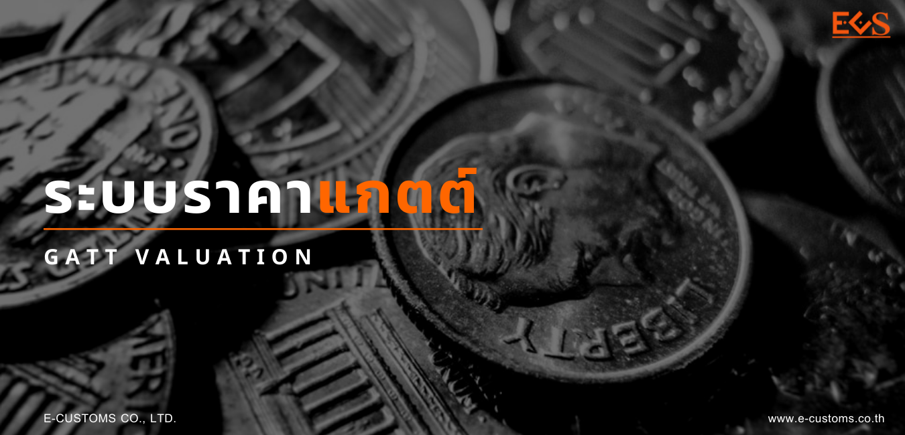

ระบบราคาแกตต์ (GATT Valuation)
ในกรณีของนำเข้า หมายถึง ราคาของของเพื่อความมุ่งหมายในการจัดเก็บอากร ปัจจุบันประเทศไทยใช้ราคาศุลกากรที่เรียกว่า “ระบบราคาแกตต์ (GATT Valuation)” ขององค์การการค้าโลก (World Trade Organization: WTO) ในการกำหนดราคาสินค้าขาเข้า ซึ่งเป็นการปฏิบัติตามพันธกรณีความตกลงว่าด้วยการนำมาตรา 7 ของความตกลงทั่วไปว่าด้วยภาษีศุลกากรและการค้า 1994 มาถือปฏิบัติ (Agreement on Implementation of Article VII of the General Agreement on tariffs and Trade 1994)
ปกติการกำหนดราคาศุลกากรจะอยู่บนพื้นฐานของราคาซื้อขายของที่นำเข้า ซึ่งเป็นราคาที่ผู้ซื้อจ่ายหรือ พึงจ่ายจริงให้กับผู้ขายในต่างประเทศ อย่างไรก็ดี ราคาซื้อขายของที่นำเข้านั้น จะอยู่ภายใต้เงื่อนไขบางประการ เช่น การซื้อขาย ผู้ซื้อกับผู้ขายต้องไม่มีความสัมพันธ์กัน หรือการซื้อขายนั้นต้องไม่มีเงื่อนไขอย่างอื่นอีก
วิธีการกำหนดราคาศุลกากร
การกำหนดราคาศุลกากรตามหลักการของแกตต์ กำหนดจาก 6 วิธี ดังนี้
- ราคาซื้อขายของที่นำเข้า (Transaction value) หมายถึง ราคาซื้อขาย ที่ผู้ซื้อสินค้าได้ชำระจริง หรือที่จะต้องชำระให้กับผู้ขายในต่างประเทศสำหรับของที่นำเข้า ซึ่งได้มีการปรับราคาหรือได้นำมูลค่าหรือค่าใช้จ่ายอื่นๆ ไปรวมด้วย เช่น ค่าวัสดุเสริม ค่านายหน้า หรือค่าสิทธิ เป็นต้น.
- ราคาซื้อขายของที่เหมือนกัน (Transaction value of Identical Goods) หมายถึง ราคาซื้อขายของที่มีลักษณะเหมือนกันทุกด้านกับของที่นำเข้า ไม่ว่าจะเป็นทางกายภาพ คุณภาพ และชื่อเสียง และต้องผลิตขึ้นในประเทศเดียวกันกับของนำเข้าด้วย ทั้งนี้ โดยให้คำนึงถึงค่าประกันภัย ค่าขนส่งของที่นำเข้ามายังด่านศุลกากรที่นำของเข้า ค่าขนของลง ค่าขนของขึ้น และค่าจัดการต่างๆ ที่เกี่ยวเนื่องกับการขนส่งของมายังด่านศุลกากรที่นำของเข้าด้วย.
- ราคาซื้อขายของที่คล้ายกัน (Transaction value of Similar Goods) หมายถึง ราคาซื้อขายของที่ไม่เหมือนกันครบทุกด้านกับของที่นำเข้า แต่มีลักษณะหรือใช้วัสดุที่เป็นส่วนประกอบเหมือนกัน ผลิตในประเทศเดียวกัน และทำหน้าที่อย่างเดียวกันหรือทดแทนกันได้ในทางการค้า ทั้งนี้ โดยพิจารณาถึงคุณภาพ ชื่อเสียง และเครื่องหมายการค้าของของที่นำเข้ากับของนั้น.
- ราคาหักทอน (Deductive Value) หมายถึง ราคาที่กำหนดขึ้นโดยใช้ราคาซื้อขายต่อหน่วยของของที่นำเข้า หรือราคาซื้อขายต่อหน่วยของของที่เหมือนหรือของที่คล้ายกันที่ได้ขายไปในประเทศไทย โดยหักทอนค่าใช้จ่ายบางส่วนออกไป เช่น ค่านายหน้า หรือกำไรและค่าใช้จ่าย ค่าขนส่งและค่าประกันภัยที่เกิดขึ้นในราชอาณาจักร ค่าภาษีอากรในประเทศไทย มูลค่าเพิ่มของสินค้าที่เกิดขึ้นจากการประกอบหรือผ่านกรรมวิธีเพิ่มเติม.
- ราคาคำนวณ (Computed Value) หมายถึง ราคาที่กำหนดขึ้นจากต้นทุนการผลิตของสินค้าที่นำเข้า บวกกับกำไรและค่าใช้จ่ายทั่วไปที่รวมอยู่ตามปกติในการขายจากประเทศส่งออกมายังประเทศไทย รวมทั้งค่าภาชนะบรรจุ ค่าประกันภัย และค่าขนส่ง.
- ราคาย้อนกลับ (Fall Back Value) หมายถึง การกำหนดราคาโดยนำหลักเกณฑ์ วิธีการและเงื่อนไขในการกำหนดราคาตามวิธีที่ 1-5 มาใช้โดยผ่อนปรนเพื่อการกำหนดราคาอย่างสมเหตุสมผล.
การกำหนดราคาศุลกากรจะกำหนดตามวิธีที่ 1 วิธีที่ 2 และวิธีที่ 3 ตามลำดับ หากไม่อาจกำหนดราคาศุลกากรตามวิธีดังกล่าวได้ ให้กำหนดราคาศุลกากรตามวิธีที่ 4 หรือเมื่อยังไม่อาจกำหนดตามวิธีที่ 4 ได้อีก จะกำหนดราคาศุลกากรตามวิธีที่ 5 และวิธีที่ 6 ตามลำดับ อย่างไรก็ตาม ผู้นำเข้าสามารถขอให้กรมศุลกากรสลับลำดับการใช้วิธีที่ 5 และวิธีที่ 4 ได้หากหน่วยงานประเมินอากรเห็นชอบตามคำร้องของผู้นำเข้า
การกำหนดราคาศุลกากรตามวิธีที่ 1 ราคาซื้อขายของที่นำเข้าจะต้องเป็นราคาที่ได้ชำระจริงหรือที่จะต้องชำระสำหรับของที่นำเข้าเมื่อได้มีการขายเพื่อส่งออกมายังราชอาณาจักร โดยต้องมีการปรับราคาตามหลักเกณฑ์ดังต่อไปนี้
-
ค่าใช้จ่ายหรือรายได้ที่ต้องนำมารวมไว้ในราคาซื้อขายของที่นำเข้า
- ค่าสิทธิและค่าธรรมเนียมใบอนุญาตที่เกี่ยวข้องกับของที่นำเข้า ไม่ว่าโดยทางตรงหรือทางอ้อมอันเป็นเงื่อนไขในการขายของนั้น
- รายได้ซึ่งผู้ขายได้รับจากการที่ผู้ซื้อนำของที่นำเข้าไปใช้ หรือขายต่อไม่ว่าโดยทางตรงหรือทางอ้อม
- ค่าประกันภัย ค่าขนส่งของที่นำเข้ามายังท่าหรือที่ที่นำของเข้า ค่าขนของลง ค่าขนของขึ้นและค่าจัดการต่างๆ ที่เกี่ยวเนื่องกับการขนส่งของที่นำเข้ามายังท่าหรือที่ที่นำของเข้า
- ค่าใช้จ่ายหรือมูลค่าที่ผู้ซื้อเป็นผู้รับภาระตามรายการ ดังต่อไปนี้
- ค่าธรรมเนียมหรือค่าบำเหน็จตัวแทนและนายหน้า แต่ไม่รวมค่าธรรมเนียมหรือค่าบำเหน็จตัวแทนเนื่องจากการซื้อ
- ค่าภาชนะบรรจุที่ถือเป็นส่วนหนึ่งของของที่นำเข้าตามความมุ่งหมายในการจัดเก็บอากร
- ค่าวัสดุและค่าแรงงานในการบรรจุหีบห่อของที่นำเข้า
- มูลค่าของวัสดุ อุปกรณ์หรือบริการเพื่อใช้ในการผลิตและการขายเพื่อส่งออกของที่นำเข้า ไม่ว่าโดยทางตรงหรือทางอ้อมที่ผู้ซื้อเป็นผู้จัดหา ดังต่อไปนี้
- วัสดุ ส่วนประกอบ ชิ้นส่วนหรือสิ่งอื่นที่คล้ายคลึงกัน ที่รวมอยู่ในของที่นำเข้า
- เครื่องมือ แม่พิมพ์ แบบพิมพ์ หรือสิ่งอื่นที่คล้ายคลึงกัน ที่ใช้ในการผลิตของที่นำเข้า
- วัสดุที่ใช้สิ้นเปลืองไปในการผลิตของที่นำเข้า
- การให้บริการด้านวิศวกรรม พัฒนาการ งานศิลป์ การออกแบบ แบบแปลน และภาพร่างที่กระทำขึ้นนอกราชอาณาจักรและเป็นสิ่งจำเป็นสำหรับการผลิตของที่นำเข้า.
-
ค่าใช้จ่ายที่ต้องนำมาหักออกจากราคาซื้อขายของที่นำเข้าในการกำหนดราคาศุลกากรตามวิธีที่ 1
- ค่าใช้จ่ายในการก่อสร้าง ติดตั้ง ประกอบ บำรุงรักษา หรือการให้ความช่วยเหลือด้านวิชาการที่กระทำขึ้นภายหลังจากการนำเข้าของนั้น
- ค่าขนส่งภายหลังจากการนำเข้าสำเร็จแล้ว
- ค่าอากรและภาษีเนื่องจากการนำเข้า
-
ค่าใช้จ่าย รายได้ หรือมูลค่าของวัสดุ อุปกรณ์หรือบริการ ที่จะรวมเข้าไว้ในราคาซื้อขายของที่นำเข้า และค่าใช้จ่ายที่จะนำมาหักออกจากราคาซื้อขายของที่นำเข้า จะต้องอยู่บนพื้นฐานของข้อมูลที่เป็นจริงและคำนวณเป็นมูลค่าได้เท่านั้น.
-
ราคาซื้อขายของที่นำเข้าที่ใช้ในการกำหนดราคาศุลกากรต้องอยู่ภายใต้เงื่อนไข ดังต่อไปนี้
- ผู้ซื้อจะต้องไม่ถูกจำกัดในการจำหน่ายหรือการใช้ของนั้น เว้นแต่จะเป็นข้อจำกัดที่
- กำหนด ขึ้นโดยบทบัญญัติของกฎหมายหรือโดยเจ้าหน้าที่ของรัฐ เช่น ห้ามขายของแก่ผู้เยาว์ ให้ตรวจสอบหรือทดสอบก่อนใช้ของ หรือให้มีสลากหีบห่อตามที่กำหนดไว้ เป็นต้น
- เป็นการห้ามของที่นำเข้านั้นไปขายต่อในสถานที่หรือพื้นที่บางแห่ง เช่น ผู้ขายกำหนดให้ผู้ซื้อขายของนั้นเฉพาะในเขตกรุงเทพมหานครและปริมณฑลเท่านั้น
- ไม่มีผลกระทบอย่างมากต่อราคาของของที่นำเข้า เช่น กรณีผู้ขายกำหนดห้ามผู้ซื้อแสดงหรือขายรถยนต์ก่อนวันเริ่มต้นรุ่นปีของรถยนต์นั้น
- การขายหรือราคาขายต้องไม่ขึ้นอยู่กับเงื่อนไขหรือสิ่งตอบแทนบางประการที่มิอาจกำหนดเป็นมูลค่าได้ เช่น ผู้ซื้อจะต้องซื้อของอย่างอื่นจากผู้ขายตามจำนวนที่ระบุไว้ด้วย ผู้ซื้อจะต้องขายของอย่างอื่นให้กับผู้ขายด้วย
- ผู้ขายต้องไม่ได้รับรายได้จากการที่ผู้ซื้อนำของที่นำเข้าไปใช้หรือขายต่อในภายหลัง ไม่ว่าโดยทางตรงหรือทางอ้อม เว้นแต่จะเป็นกรณีที่อาจนำมารวมไว้ในราคาได้ตามข้อ 1
- ผู้ซื้อต้องไม่มีความสัมพันธ์กับผู้ขาย เว้นแต่ความสัมพันธ์ดังกล่าวจะไม่มีผลต่อราคาซื้อขายของที่นำเข้า
- ผู้ซื้อจะต้องไม่ถูกจำกัดในการจำหน่ายหรือการใช้ของนั้น เว้นแต่จะเป็นข้อจำกัดที่
-
ความสัมพันธ์ระหว่างบุคคลในกรณีดังต่อไปนี้เป็นความสัมพันธ์ที่อาจมีผลต่อการกำหนดราคาศุลกากร
- บุคคลหนึ่งเป็นกรรมการหรือพนักงานซึ่งเป็นผู้บริหารในกิจการของอีกบุคคลหนึ่ง
- บุคคลหนึ่งเป็นหุ้นส่วนเพื่อกระทำกิจการร่วมกับอีกบุคคลหนึ่ง
- บุคคลหนึ่งเป็นนายจ้างหรือลูกจ้างของอีกบุคคลหนึ่ง
- บุคคลหนึ่งเป็นเจ้าของ ผู้ควบคุม หรือถือหุ้นที่มีสิทธิออกเสียงในกิจการของอีกบุคคลหนึ่งตั้งแต่ ร้อยละห้าของหุ้นทั้งหมดที่มีสิทธิออกเสียง ไม่ว่าโดยทางตรงหรือทางอ้อม
- บุคคลหนึ่งควบคุมอีกบุคคลหนึ่งไม่ว่าโดยทางตรงหรือทางอ้อม
- บุคคลทั้งสองถูกควบคุมโดยบุคคลที่สามไม่ว่าโดยทางตรงหรือทางอ้อม
- บุคคลทั้งสองร่วมกันควบคุมบุคคลที่สามไม่ว่าโดยทางตรงหรือทางอ้อมหรือ
- บุคคลหนึ่งเป็นสมาชิกในครอบครัวเดียวกันกับอีกบุคคลหนึ่ง
บุคคลที่มีอำนาจควบคุมตาม (4) (5) (6) และ (7) หมายถึงบุคคลที่มีอำนาจที่จะยับยั้งหรือสั่งการต่ออีกบุคคลหนึ่งในทางนิตินัยหรือพฤตินัย.
-
ของนำเข้าดังตัวอย่างต่อไปนี้ ไม่ถือว่าเป็นการขาย และไม่สามารถกำหนดราคาศุลกากรโดยวิธีที่ 1
- ของขวัญ ของตัวอย่าง ของส่งเสริมการขายที่ให้มาโดยไม่คิดราคา - ของฝากขาย - ของที่นำเข้ามาโดยสำนักงานสาขาที่เป็นนิติบุคคลเดียวกัน - ของที่นำเข้ามาภายใต้สัญญาให้เช่า ให้ยืม - ของนำเข้าเพื่อทำลาย โดยผู้นำของเข้าได้รับค่าบริการ - ของที่นำเข้ามาโดยคนกลางซึ่งไม่ใช่ผู้ซื้อ
-
กรมศุลกากรจะกำหนดราคาศุลกากรตามวิธีที่ 2 คือราคาซื้อขายของที่เหมือนกัน หากไม่อาจกำหนดราคาศุลกากรตามวิธีที่ 1 ได้ ทั้งนี้ ราคาซื้อขายของที่เหมือนกันที่ใช้ในการกำหนดราคาศุลกากรจะเป็นราคาซื้อขายของที่มีลักษณะเหมือนกันทุกด้านกับของที่นำเข้า ไม่ว่าจะเป็นทางกายภาพ คุณภาพ และชื่อเสียง และต้องผลิตขึ้นในประเทศเดียวกันกับของที่นำเข้าด้วย โดยให้คำนึงถึงค่าประกันภัย ค่าขนส่งของที่นำเข้ามายังด่านศุลกากรที่นำของเข้า ค่าขนของลง ค่าขนของขึ้น และค่าจัดการต่าง ๆ ที่เกี่ยวเนื่องกับการขนส่งของมายังด่านศุลกากรที่นำเข้าด้วย
-
ราคาซื้อขายของที่เหมือนกันที่ใช้ในการกำหนดราคาศุลกากรจะต้องเป็นไปตามหลักเกณฑ์ วิธีการ และเงื่อนไข ดังต่อไปนี้
- เป็นราคาซื้อขายของที่เหมือนกันที่ได้ขายเพื่อส่งออกมายังราชอาณาจักรและได้ส่งออกในเวลาเดียวกันหรือใกล้เคียงกันกับของที่นำเข้า
คำว่า “ส่งออกในเวลา เดียวกันหรือในเวลาใกล้เคียงกัน” หมายถึง การส่งออกภายในระยะเวลา 30 วัน ก่อนหรือหลังการส่งออกของของที่นำเข้า และในการตรวจสอบวันส่งออก ให้ใช้วันที่ที่ออกใบตราส่งสินค้าเป็นเกณฑ์ - เป็นราคาซื้อขายของที่นำเข้าที่เคยรับเป็นราคาศุลกากรมาแล้ว
- เป็นราคาซื้อขายในระดับการค้าและปริมาณเดียวกันกับของที่นำเข้า
- การขายในระดับการค้าเดียวกัน หมายถึง การค้าส่ง การค้าปลีก ฯลฯ หากของที่นำเข้าเป็นการขายส่ง ของที่เหมือนกันจะต้องเป็นการขายส่งเช่นเดียวกัน หากของที่นำเข้าเป็นการขายปลีก ของที่เหมือนกันก็จะต้องเป็นการขายปลีกเช่นเดียวกัน
- การขายในระดับปริมาณเดียวกัน หมายถึง การขายในปริมาณที่ใกล้เคียงกันตามปกติวิสัยของการซื้อขายสินค้าในกลุ่มหรือชนิดเดียวกัน
- ไม่เป็นราคาซื้อขายของที่รวมหรือประกอบด้วยมูลค่าการให้บริการด้านวิศวกรรม พัฒนาการ งานศิลป์ งานออกแบบ แบบแปลน และภาพร่าง ที่ได้กระทำขึ้นในราชอาณาจักร
- ในกรณีที่ไม่มีราคาซื้อขายของที่เหมือนกันตาม 2.3 ให้นำราคาซื้อขายของที่เหมือนกันที่ได้ขายในระดับการค้าเดียวกับของที่นำเข้าแต่ปริมาณต่างกัน หรือปริมาณเดียวกับของที่นำเข้าแต่ระดับการค้าต่างกัน หรือระดับการค้าและปริมาณแตกต่างกับของที่นำเข้า ซึ่งได้เคยรับเป็นราคาศุลกากรมาแล้ว มาปรับราคา โดยคำนึงถึงความแตกต่างในเรื่องระดับการค้าหรือปริมาณ ค่าประกันภัย ค่าขนส่งของที่นำเข้ามายังด่านศุลกากรที่นำของเข้า ค่าขนของลง ค่าขนขนขึ้น และค่าจัดการต่าง ๆ ที่เกี่ยวเนื่องกับการขนส่งของมายังด่านศุลกากรที่นำของเข้า ทั้งนี้ โดยพิจารณาจากหลักฐานที่ผู้นำของเข้านำมาแสดง เช่น
- การขายในระดับการค้าเดียวกันแต่ในปริมาณต่างกัน ให้ปรับราคาเฉพาะด้านปริมาณ
- การขายในระดับการค้าต่างกันแต่ในปริมาณเดียวกัน ให้ปรับราคาเฉพาะด้านระดับการค้า
- การขายในระดับการค้าต่างกันและในปริมาณที่ต่างกัน ให้ปรับราคาทั้งด้านระดับการค้าและปริมาณ
- ของที่นำเข้า ส่งออกจากประเทศสิงคโปร์ ของที่เหมือนกันส่งออกจากประเทศสหรัฐอเมริกา จะต้องปรับราคาสำหรับความแตกต่างด้านระยะทาง
- ของที่นำเข้า ส่งออกจากประเทศสหรัฐอเมริกาด้านตะวันตก ของที่เหมือนกันส่งออกจากประเทศสหรัฐอเมริกาด้านตะวันออก จะต้องปรับราคาสำหรับความแตกต่างด้านระยะทาง
- ของที่นำเข้า ส่งออกจากประเทศญี่ปุ่นโดยทางอากาศยาน ของที่เหมือนกันส่งออกจากประเทศญี่ปุ่นโดยทางเรือ จะต้องปรับราคาสำหรับวิธีขนส่งที่แตกต่างกัน
- เป็นราคาซื้อขายของที่เหมือนกันที่ได้ขายเพื่อส่งออกมายังราชอาณาจักรและได้ส่งออกในเวลาเดียวกันหรือใกล้เคียงกันกับของที่นำเข้า
-
ถ้าราคาซื้อขายของที่เหมือนกันมีมากกว่าหนึ่งราคา ให้ใช้ราคาซื้อขายของที่เหมือนกันที่มีราคาต่ำสุด ซึ่งผลิตโดยผู้ผลิตรายเดียวกัน และเวลาที่ส่งออก ระดับการค้า ปริมาณ เงื่อนไขในการชำระเงินและการส่งมอบ วิธีการขนส่ง และการดำเนินการอื่นใดที่เกี่ยวข้องกับการซื้อขายใกล้เคียงกับของที่นำเข้า ตามหลักเกณฑ์ที่อธิบดีประกาศกำหนด
-
หากไม่อาจกำหนดราคาศุลกากรตามวิธีที่ 1 และวิธีที่ 2 ให้กำหนดราคาศุลกากรโดยวิธีที่ 3 คือ ราคาซื้อขายของที่คล้ายกันซึ่งราคาซื้อขายของที่คล้ายกันที่ใช้ในการกำหนดราคาศุลกากรจะต้องเป็นราคาซื้อขายของที่ไม่เหมือนกันครบทุกด้านกับของที่นำเข้า แต่มีลักษณะหรือใช้วัสดุที่เป็นส่วนประกอบเหมือนกัน ผลิตในประเทศเดียวกัน และทำหน้าที่อย่างเดียวกันหรือทดแทนกันได้ในทางการค้า ทั้งนี้ โดยพิจารณาถึงคุณภาพ ชื่อเสียง และเครื่องหมายการค้าของของที่นำเข้ากับของนั้นด้วย
-
ราคาซื้อขายของที่คล้ายกันที่ใช้ในการกำหนดราคาศุลกากรจะต้องเป็นไปตามหลักเกณฑ์ วิธีการ และเงื่อนไข ดังต่อไปนี้
-
เป็นราคาซื้อขายของที่คล้ายกันที่ได้ขายเพื่อส่งออกมายังราชอาณาจักรและได้ส่งออกในเวลาเดียวกันหรือใกล้เคียงกันกับของที่นำเข้า คำว่า “ส่งออกในเวลา เดียวกันหรือในเวลาใกล้เคียงกัน” หมายถึง การส่งออกภายในระยะเวลา 30 วัน ก่อนหรือหลังการส่งออกของของที่นำเข้า และในการตรวจสอบวันส่งออก ให้ใช้วันที่ที่ออกใบตราส่งสินค้าเป็นเกณฑ์
-
เป็นราคาซื้อขายของที่นำเข้าที่เคยรับเป็นราคาศุลกากรมาแล้ว
-
เป็นราคาซื้อขายในระดับการค้าและปริมาณเดียวกันกับของที่นำเข้า
- การขายในระดับการค้าเดียวกัน หมายถึง การค้าส่ง การค้าปลีก ฯลฯ หากของที่นำเข้าเป็นการขายส่ง ของที่คล้ายกันจะต้องเป็นการขายส่งเช่นเดียวกัน หากของที่นำเข้าเป็นการขายปลีก ของที่คล้ายกันก็จะต้องเป็นการขายปลีกเช่นเดียวกัน
- การขายในระดับปริมาณเดียวกัน หมายถึง การขายในปริมาณที่ใกล้เคียงกันตามปกติวิสัยของการซื้อขายสินค้าในกลุ่มหรือชนิดเดียวกัน
-
ไม่เป็นราคาซื้อขายของที่รวมหรือประกอบด้วยมูลค่าการให้บริการด้านวิศวกรรม พัฒนาการ งานศิลป์ งานออกแบบ แบบแปลน และภาพร่าง ที่ได้กระทำขึ้นในราชอาณาจักร
-
ในกรณีที่ไม่มีราคาซื้อขายของที่คล้ายกันตาม 2.3 ให้นำราคาซื้อขายของที่คล้ายกันที่ได้ขายในระดับการค้า เดียวกับของที่นำเข้าแต่ปริมาณต่างกัน หรือปริมาณเดียวกับของที่นำเข้าแต่ระดับการค้าต่างกัน หรือระดับการค้าและปริมาณแตกต่างกับของที่นำเข้า ซึ่งได้เคยรับเป็นราคาศุลกากรมาแล้ว มาปรับราคา โดยคำนึงถึงความแตกต่างในเรื่องระดับการค้าหรือปริมาณ ค่าประกันภัย ค่าขนส่งของที่นำเข้ามายังด่านศุลกากรที่นำของเข้า ค่าขนของลง ค่าขนขนขึ้น และค่าจัดการต่างๆ ที่เกี่ยวเนื่องกับการขนส่งของมายังด่านศุลกากรที่นำของเข้า ทั้งนี้ โดยพิจารณาจากหลักฐานที่ผู้นำของเข้านำมาแสดง เช่น
- การขายในระดับการค้าเดียวกันแต่ในปริมาณต่างกัน ให้ปรับราคาเฉพาะด้านปริมาณ
- การขายในระดับการค้าต่างกันแต่ในปริมาณเดียวกัน ให้ปรับราคาเฉพาะด้านระดับการค้า
- การขายในระดับการค้าต่างกันและในปริมาณที่ต่างกัน ให้ปรับราคาทั้งด้านระดับการค้าและปริมาณ
- ของที่นำเข้า ส่งออกจากประเทศสิงคโปร์ ของที่คล้ายกันส่งออกจากประเทศสหรัฐอเมริกา จะต้องปรับราคาสำหรับความแตกต่างด้านระยะทาง
- ของที่นำเข้า ส่งออกจากประเทศสหรัฐอเมริกาด้านตะวันตก ของที่คล้ายกันส่งออกจากประเทศสหรัฐอเมริกาด้านตะวันออก จะต้องปรับราคาสำหรับความแตกต่างด้านระยะทาง
- ของที่นำเข้า ส่งออกจากประเทศญี่ปุ่นโดยทางอากาศยาน ของที่คล้ายกันส่งออกจากประเทศญี่ปุ่นโดยทางเรือ จะต้องปรับราคาสำหรับวิธีขนส่งที่แตกต่างกัน.
-
-
ถ้าราคาซื้อขายของที่คล้ายกันมีมากกว่าหนึ่งราคา ให้ใช้ราคาซื้อขายของที่คล้ายกันที่มีราคาต่ำสุด ซึ่งผลิตโดยผู้ผลิตรายเดียวกัน และเวลาที่ส่งออก ระดับการค้า ปริมาณ เงื่อนไขในการชำระเงินและการส่งมอบ วิธีการขนส่ง และการดำเนินการอื่นใด ที่เกี่ยวข้องกับการซื้อขายใกล้เคียงกับของที่นำเข้า ตามหลักเกณฑ์ที่อธิบดีประกาศกำหนด
-
หากไม่อาจกำหนดราคาศุลกากรตามวิธีที่ 1 ราคาซื้อขายของที่นำเข้า วิธีที่ 2 ราคาซื้อขายของที่เหมือนกัน และวิธีที่ 3 ราคาซื้อขายของที่คล้ายกัน กรมศุลกากรจะกำหนดราคาศุลกากรโดยวิธีที่ 4 ราคาหักทอน เว้นแต่ผู้นำเข้าร้องขอต่อพนักงานศุลกากรให้กำหนดราคาศุลกากรโดยใช้ราคาคำนวณก่อนราคาหักทอนและพนักงานศุลกากรเห็นชอบกับคำร้องดังกล่าวแล้ว.
-
ราคาหักทอนที่ใช้ในการกำหนดราคาศุลกากร สำหรับของที่นำเข้าจะต้องเป็นราคาซื้อขายต่อหน่วยของ ของที่นำเข้าที่ได้ขายไปในราชอาณาจักรในภาพเดียวกับที่นำเข้า โดยหักค่าใช้จ่าย ดังต่อไปนี้ออก
- ค่าธรรมเนียมหรือค่าบำเหน็จตัวแทนที่ได้จ่ายหรือตกลงว่าจะจ่าย หรือกำไรและค่าใช้จ่ายทั่วไปตามปกติที่เกี่ยวเนื่องกับการขายของนั้นในราชอาณาจักร อย่างใดอย่างหนึ่ง โดยเทียบเคียงกับของประเภทหรือชนิดเดียวกัน
- ค่าประกัน ภัยค่าขนส่ง และค่าใช้จ่ายต่างๆ ที่เกี่ยวข้องกับการขนส่งของนั้นที่เกิดขึ้นในราชอาณาจักร
- ค่าอากรและภาษีอื่นๆ ที่ต้องชำระในราชอาณาจักร เนื่องจากการนำเข้าหรือการขายของนั้น
-
ในกรณีที่ไม่มีราคาซื้อขายต่อหน่วยของของที่นำเข้าตามข้อ 2 ให้ใช้ราคาซื้อขายต่อหน่วยของของที่เหมือนกันหรือของที่คล้ายกัน ตามลำดับ ที่ได้ขายไปในราชอาณาจักรในสภาพเดียวกับที่นำเข้าโดยหักค่าใช้จ่ายตามข้อ 2.1 - 2.3 ออกจากราคาซื้อขายต่อหน่วยของของที่เหมือนกันหรือของที่คล้ายกัน แล้วแต่กรณี
-
ราคาซื้อขายต่อหน่วยของของที่นำเข้าตามข้อ 2 หรือของที่เหมือนกันหรือของที่คล้ายกันตามข้อ 3 จะต้องเป็นราคาที่ได้ขายไปในปริมาณรวมที่มากที่สุดในเวลาเดียวกันหรือใกล้เคียงกันกับการนำเข้าของที่นำเข้า ในกรณีที่ไม่มีราคาที่ได้ขายในเวลาดังกล่าว ให้ใช้ราคาที่ได้ขายไปในปริมาณรวมที่มากที่สุดในวันแรกที่ได้มีการขายของที่นำเข้า ของที่เหมือนกัน หรือของที่คล้ายกันดังกล่าว ซึ่งต้องไม่เกิน 90 วันหลังจากการนำเข้าของนั้น
-
การใช้ราคาหักทอนตามข้อ 2 - 4 ผู้ซื้อต้องไม่มีความสัมพันธ์กับผู้ขาย และไม่เป็นผู้จัดหาวัสดุ อุปกรณ์หรือบริการซึ่งนำไปใช้ในการผลิตให้แก่ผู้ขายเพื่อส่งออกมายังราชอาณาจักร
-
ในกรณีที่ไม่มีการขายของที่นำเข้า ของที่เหมือนกัน หรือของที่คล้ายกันตามข้อ 2 - 4 หากผู้นำของเข้าร้องขอหรือพนักงานศุลกากรเห็นสมควร ให้ใช้ราคาซื้อขายต่อหน่วยของของที่นำเข้าที่ได้นำไปผ่านกรรมวิธีเพิ่มเติม โดยให้หักทอนมูลค่าที่เพิ่มขึ้นจากการนำไปผ่านกรรมวิธีเพิ่มเติมดังกล่าวและค่าใช้จ่ายต่างๆ ตามข้อ 2.1 - 2.3 ออกจากราคาซื้อขายของของนั้น ทั้งนี้ราคาซื้อขายต่อหน่วยของของที่นำเข้าตามข้อนี้จะต้องเป็นราคาที่ได้จากการขายของนั้นไปในปริมาณรวมมากที่สุด โดยผู้ซื้อต้องไม่มีความสัมพันธ์กับผู้ขาย
-
หากไม่อาจกำหนดราคาศุลกากรตามวิธีที่ 1 ราคาซื้อขายของที่นำเข้า วิธีที่ 2 ราคาซื้อขายของที่เหมือนกัน วิธีที่ 3 ราคาซื้อขายของที่คล้ายกัน และวิธีที่ 4 ราคาหักทอน ให้กำหนดราคาศุลกากรโดยวิธีที่ 5 ราคาคำนวณ เว้นแต่ผู้นำเข้าร้องขอต่อพนักงานศุลกากรให้กำหนดราคาศุลกากรโดยใช้ราคาคำนวณก่อนราคาหักทอนและพนักงานศุลกากรเห็นชอบกับคำร้องดังกล่าวแล้ว.
-
ราคาคำนวณที่ใช้ในการกำหนดราคาศุลกากรจะต้องประกอบด้วยผลรวมของรายการ ดังต่อไปนี้
- ต้นทุนหรือมูลค่าของวัสดุและการจัดทำหรือกรรมวิธีใดๆ ที่ใช้ในการผลิตของที่นำเข้า ซึ่งหมายความรวมถึง ต้นทุนวัตถุดิบ วัตถุดิบกึ่งสำเร็จรูป ส่วนประกอบ หรือชิ้นส่วน รวมทั้งต้นทุนในการจัดหาวัตถุดิบจากแหล่งผู้ผลิตมายังโรงงานอุตสาหกรรม แต่ไม่รวมถึงเศษหรือของเสียที่สามารถนำกลับมาใช้ใหม่ได้อีก (RECOVERABLE SCRAP OR WASTE) และไม่รวมค่าภาษีอากรภายในประเทศผู้ผลิตสำหรับวัตถุดิบที่มีการคืนค่าภาษี อากรเพื่อการส่งออก ทั้งนี้ ต้นทุนในการจัดทำให้รวมถึง ต้นทุนทางตรง ได้แก่ ค่าแรงงาน ต้นทุนในการประกอบ เครื่องจักรในการผลิต และต้นทุนทางอ้อม ได้แก่ ที่ปรึกษาโรงงาน การบำรุงรักษา ค่าล่วงเวลา ฯลฯ
- กำไรและค่าใช้จ่ายทั่วไปที่เกิดขึ้นจากการขายของประเภทหรือชนิดเดียวกันกับของที่นำเข้า โดยผู้ผลิตรายอื่นๆ เพื่อส่งออกมายังราชอาณาจักร
- ค่าภาชนะบรรจุที่ถือเป็นส่วนหนึ่งของของที่นำเข้า
- ค่าวัสดุและค่าแรงงานในการบรรจุหีบห่อของที่นำเข้า
- มูลค่าของวัสดุและอุปกรณ์เพื่อใช้ในการผลิตและการขายเพื่อส่งออกของที่นำเข้า ไม่ว่าโดยทางตรงหรือทางอ้อมที่ผู้ซื้อเป็นผู้จัดหา
- ค่าประกันภัย ค่าขนส่งของที่นำเข้ามายังด่านศุลกากรที่นำของเข้า ค่าขนของลง ค่าขนของขึ้น และค่าจัดการต่างๆ ที่เกี่ยวเนื่องกับการขนส่งของที่นำเข้ามายังด่านศุลกากรที่นำของเข้า
- มูลค่าของการให้บริการด้านวิศวกรรม พัฒนาการ งานศิลป์ การออกแบบ แบบแปลนและภาพร่างที่กระทำขึ้นในราชอาณาจักรและเป็นสิ่งจำเป็นสำหรับการผลิตของที่นำเข้าโดยคิดมูลค่าของการให้บริการดังกล่าวจากผู้ผลิต (ถ้ามี)
-
การกำหนดราคาศุลกากรตามวิธีราคาคำนวณนี้ให้กระทำบนพื้นฐานของข้อมูล เอกสารหลักฐาน หรือบัญชีที่ได้รับจากผู้ผลิตจากต่างประเทศ หรือผู้นำของเข้าในนามของผู้ผลิตดังกล่าว
-
ในกรณีที่ผู้นำของเข้าหรือผู้ผลิตต่างประเทศไม่สามารถจัดส่งข้อมูล เอกสารหลักฐาน หรือบัญชีดังกล่าวได้ภายในเวลาอันสมควร ให้ถือว่าไม่อาจกำหนดราคาศุลกากรตามหมวดนี้ได้
-
หากไม่อาจกำหนดราคาศุลกากรตามวิธีที่ 1 วิธีที่ 2 วิธีที่ 3 วิธีที่ 4 และวิธีที่ 5 ได้ให้กำหนดราคาศุลกากรโดยวิธีที่ 6 ราคาย้อนกลับ โดยมีหลักเกณฑ์ในการกำหนดราคา ดังนี้.
-
กำหนดราคาศุลกากรตามวิธีที่ 6 ราคาย้อนกลับ มีหลักเกณฑ์ในการปฏิบัติ ดังนี้
- กรมศุลกากรจะพิจารณาราคาจากราคาศุลกากรที่เคยรับไว้แล้วก่อนหน้านี้
- กำหนดราคาของนำเข้าโดยใช้วิธีที่ 1 ถึงวิธีที่ 5 อย่างผ่อนปรนและสมเหตุสมผล
- กรณีที่ไม่สามารถกำหนดราคาศุลกากรตามข้อ 2.2 อาจกำหนดโดยวิธีอื่นที่สมเหตุสมผล โดยที่วิธีการดังกล่าวจะต้องไม่เป็นข้อห้ามของวิธีย้อนกลับและจะต้องสอดคล้องกับหลักการที่บัญญัติไว้ในความตกลงว่าด้วยการนำมาตรา 7 ของความตกลงทั่วไปว่าด้วยภาษีศุลกากรและการค้า 1994 มาถือปฏิบัติ และมาตรา 7 ของความตกลงทั่วไปว่าด้วยภาษีศุลกากรและการค้า 1994
- การกำหนดราคาศุลกากรโดยวิธีย้อนกลับยังสามารถผ่อนปรนหลักเกณฑ์ได้อีก ดังเช่น
- ขยายเวลาตามที่กำหนดในแต่ละวิธีออกไปครั้งละ 30 วัน แต่รวมแล้วไม่เกิน 1 ปี
- ของที่เหมือนกัน ของที่คล้ายกัน ที่ผลิตจากประเทศอื่น
- ราคาขายปลีกนำมาใช้เป็นฐานในวิธีหักทอน โดยการหักค่าใช้จ่ายอย่างเหมาะสม
- นำข้อมูลต้นทุน มูลค่าวัสดุ และการจัดทำที่หาได้จากประเทศอื่นที่มิใช่ประเทศส่งออก นำมาใช้เป็นฐานในวิธีคำนวณ
- โครงสร้างของราคาซึ่งประกอบด้วย วัตถุดิบ หรือส่วนประกอบรวมกำไรและค่าใช้จ่าย
- มูลค่าที่เท่าเทียมกับมูลค่าอันแท้จริงของของที่นำเข้าที่มีอยู่ หรือสามารถสืบค้นได้
- ราคาที่กำหนดโดยผู้เชี่ยวชาญ ผู้ชำนาญการ หรือคณะกรรมการ
-
การกำหนดราคาศุลกากรตามวิธีราคาย้อนกลับ กรมศุลกากรจะไม่กำหนดโดยใช้รายการ ดังต่อไปนี้
- ราคาขายของของที่ผลิตและขายในราชอาณาจักร - ระบบราคาที่กำหนดให้รับราคาสูงกว่าจากสองราคาที่ให้เลือก - ราคาของของที่ขายในตลาดภายในประเทศที่ส่งออกของที่จะกำหนดราคาศุลกากร - ต้นทุนในการผลิตนอกเหนือจากรายการที่ใช้ในการคำนวณราคาคำนวณ ตามวิธีที่ 5 สำหรับของที่เหมือนกันหรือของที่คล้ายกัน - ราคาขายของของที่นำเข้าที่ได้ขายเพื่อส่งออกไปยังประเทศอื่นที่มิใช่ราชอาณาจักร - ราคาศุลกากรขั้นต่ำ หรือ - ราคาที่กำหนดขึ้นเองหรือที่ไม่เป็นจริง
ข้อควรทราบในการสำแดงราคาศุลกากร
ผู้นำเข้าควรตรวจสอบว่า ราคาสินค้านำเข้าที่ท่านสำแดงต่อศุลกากรเป็นไปที่กำหนดไว้ในระบบราคาแกตต์หรือไม่ โดยตอบคำถามแนวทางการประเมินราคาแกตต์สำหรับผู้นำเข้า (การตรวจสอบว่าราคาสินค้าว่าเป็นไปตามราคาแกตต์หรือไม่) ดังต่อไปนี้
- ท่านทราบหรือท่านมีวิธีการที่น่าเชื่อถือเพียงใดในการสำแดง “ราคาที่ชำระจริงหรือที่พึงต้องชำระ” ของสินค้า หรือท่านทราบเงื่อนไขการขายสินค้าหรือไม่ เช่น ในการขายนั้นๆ มีส่วนลดการขาย พันธะการขาย ค่าใช้จ่ายทางอ้อม หรือค่าใช้จ่ายเพิ่มเติมอื่นๆ หรือไม่ ในการขายนั้น ๆ มีการชำระค่าวัสดุเสริม ค่านายหน้าหรือค่าสิทธิหรือไม่ หรือราคาสินค้าเป็นราคาที่ถูกต้องเป็นจริงหรือเป็นราคาโดยประมาณ หรือท่านและผู้จัดหาสินค้ามีความสัมพันธ์กันหรือไม่.
- ท่านได้เตรียมหรือมีวิธีการที่น่าเชื่อถือเพียงใดในการสำแดงราคาสินค้าต่อศุลกากรตามกฎกระทรวง เรื่อง การกำหนดและการใช้ราคาศุลกากร พ.ศ. 2560 อาศัยอำนาจตามความในมาตรา 5 วรรคหนึ่ง (6) และมาตรา 16 วรรคสอง แห่งพระราชบัญญัติศุลกากร พ.ศ. 2560.
- ท่านได้รับ “คำวินิจฉัย” ศุลกากรเกี่ยวกับการประเมินราคาสินค้าหรือไม่ หากได้รับ ท่านมีวิธีการที่น่าเชื่อถือเพียงใด ที่ทำให้แน่ใจว่าท่านได้ปฏิบัติตามคำวินิจฉัยนั้นและแจ้งให้ศุลกากรทราบ.
- ท่านได้ศึกษากฎหมายและระเบียบการประเมินราคาศุลกากร สารานุกรมการประเมินราคาศุลกากร (Customs Valuation Encyclopedia) สิ่งพิมพ์ศุลกากรที่แจ้งข้อควรปฏิบัติในการประเมินราคา คดีในศาล และคำวินิจฉัยศุลกากรต่าง ๆ เพื่อช่วยท่านในการประเมินราคาสินค้าหรือไม่
- ท่านได้หารือกับ “ผู้เชี่ยวชาญ” ศุลกากร (เช่น ทนายความ เจ้าหน้าที่บัญชี ผู้ชำนาญการศุลกากร ที่ปรึกษาศุลกากร) เพื่อช่วยท่านในการประเมินราคาสินค้าหรือไม่
- หากท่านซื้อสินค้าจากผู้ขายที่มีความสัมพันธ์กัน ท่านมีวิธีการที่จะทำให้มั่นใจได้หรือไม่ว่า ท่านได้รายงานข้อเท็จจริงนี้ในการนำเข้า พร้อมทั้งหามาตรการหรือวิธีการที่น่าเชื่อถือที่จะทำให้มั่นใจว่าราคาที่ได้ สำแดงต่อศุลกากรเป็นไปตามข้อทดสอบ “ผู้มีความสัมพันธ์กัน”
- ท่านมีมาตรการหรือวิธีการที่น่าเชื่อถือเพียงใดที่จะทำให้มั่นใจว่า ท่านได้รายงานต้นทุนหรือค่าใช้จ่ายที่เกี่ยวข้องกับสินค้านำเข้าตามกฎหมาย ทั้งหมดต่อศุลกากร (เช่น ค่าวัสดุเสริม ค่านายหน้าทั้งหมด ค่าใช้จ่ายทางอ้อมหรือส่วนลด ค่าสิทธิ ฯลฯ)
- หากท่านสำแดงราคาที่ซื้อขายจริง (Transaction Value) ซึ่งท่านไม่ใช่ผู้ซื้อ ท่านได้แสดงหลักฐานว่าการซื้อขายนั้น เป็นการซื้อขายโดยสุจริตและสินค้านั้นมีปลายทางการขายอยู่ที่ประเทศไทยหรือไม่
- ท่านมีแผนการหรือวิธีการที่น่าเชื่อถือในการแสดงเอกสารการนำเข้าและข้อมูลสนับสนุนอื่น ๆ ที่ศุลกากรต้องการหรือไม่
สอบถามข้อมูลเพิ่มเติม
กรณีผู้นำเข้ามีปัญหาหรือข้อสงสัยเกี่ยวกับการกำหนดราคาศุลกากรตามระบบราคาแกตต์ สามารถติดต่อสอบถามข้อมูลเพิ่มเติมได้จากสำนักงานศุลกากรหรือด่านศุลกากรที่นำเข้าทุกแห่ง หรือกองมาตรฐานพิธีการและราคาศุลกากร (กมพ.) โทร.: 0-2667-7000 ต่อ 20-4630, 20-4631
ที่มา : กรมศุลกากร
- วันที่ปรับปรุงล่าสุด : 13 มีนาคม 2561
- สอบถามข้อมูลเพิ่มเติมได้ที่ : กองมาตรฐานพิธีการและราคาศุลกากร (กมพ.)
- หมายเลขโทรศัพท์ : 0-2667-7000 ต่อ 20-4630, 20-4631 และ 20-6488
- อีเมล์ : 81000100@customs.go.th